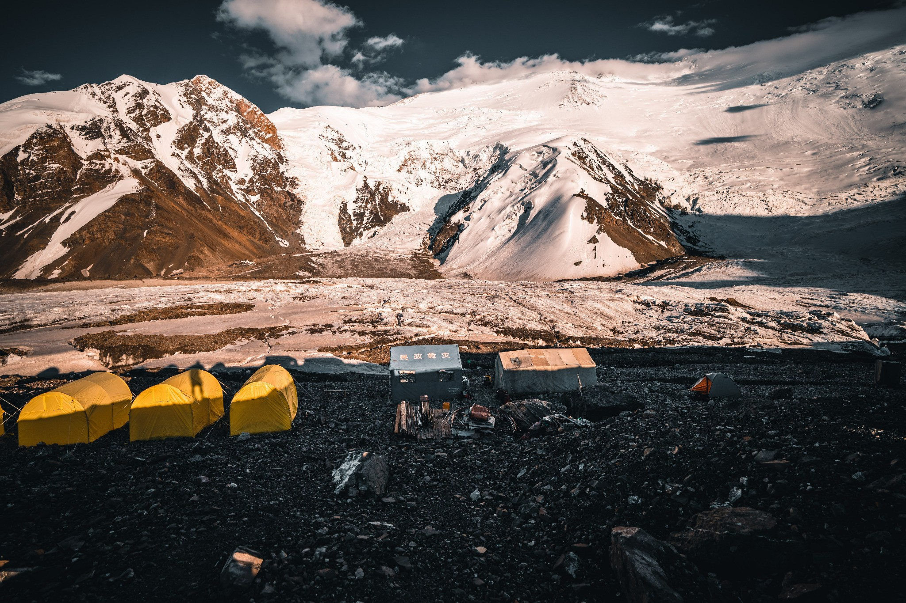
BERGE.
MENSCHEN.
MEHR.
Wir gehen weit, um näherzukommen.
Aussergewöhnliche Reisen. Echte Verbindungen.
Wirkung, die bleibt.
DER GIPFELIST NICHT ALLES.
Seit 1994 unterwegs in den Bergen. Seit 2012 als karitativer Verein. Was als Leidenschaft begann, wurde zu etwas Grösserem.
Wir organisieren Trekkingreisen, Hochtouren und Expeditionen – und setzen erwirtschaftete Mittel für Menschen und Projekte vor Ort ein.
WARUM WIR DAS TUN →BERGE VERBINDEN.MENSCHEN BLEIBEN.
Was unsere Reisen besonders macht, sind nicht nur die Gipfel – sondern die Menschen, mit denen wir sie erleben.
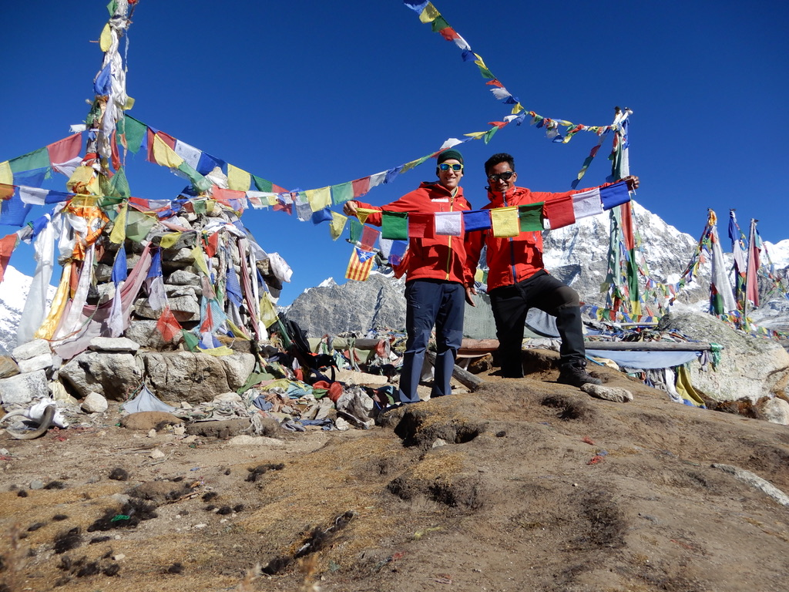
Berge erleben.
Menschen unterstützen.
HÖHENBERGSTEIGEN ist ein karitativer Verein. Mit den Erträgen aus unseren Aktivitäten investieren wir in gemeinnützige Projekte – insbesondere in Bildung, Schulen, Familien und lokale Initiativen in den bereisten Regionen.
UNSER ENGAGEMENT ENTDECKEN →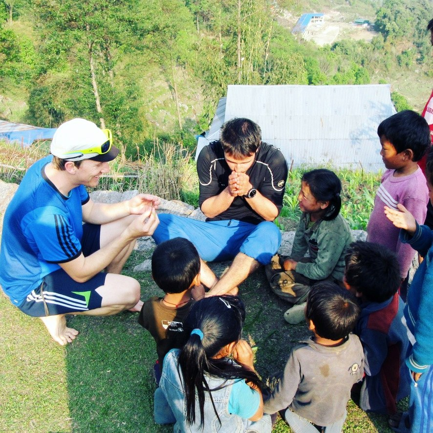
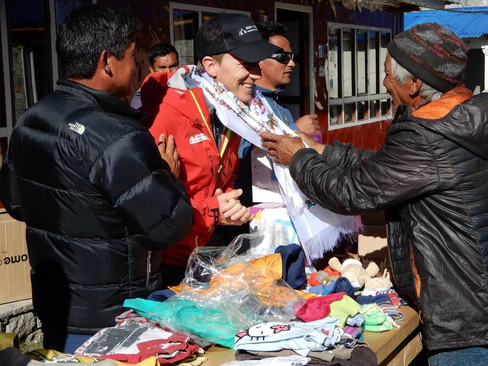
„Irgendwann hört man auf,
Gast zu sein.“
Menschen, Orte und gemeinsame Geschichten.
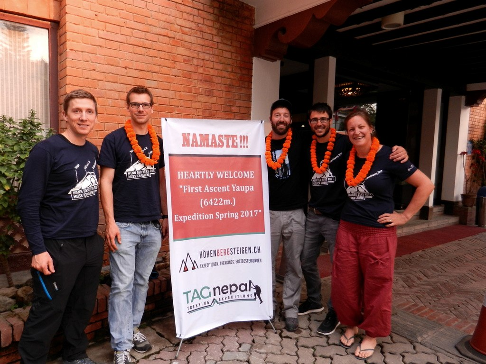
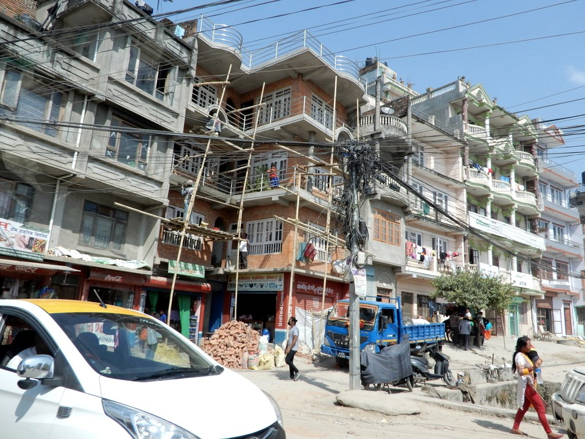
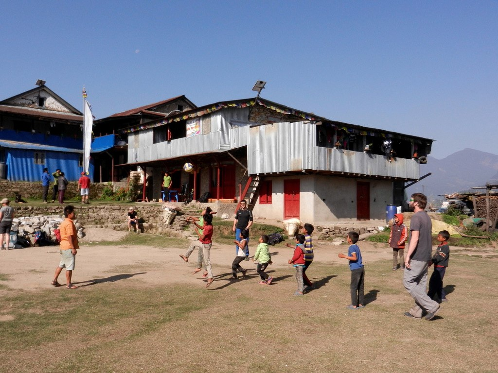
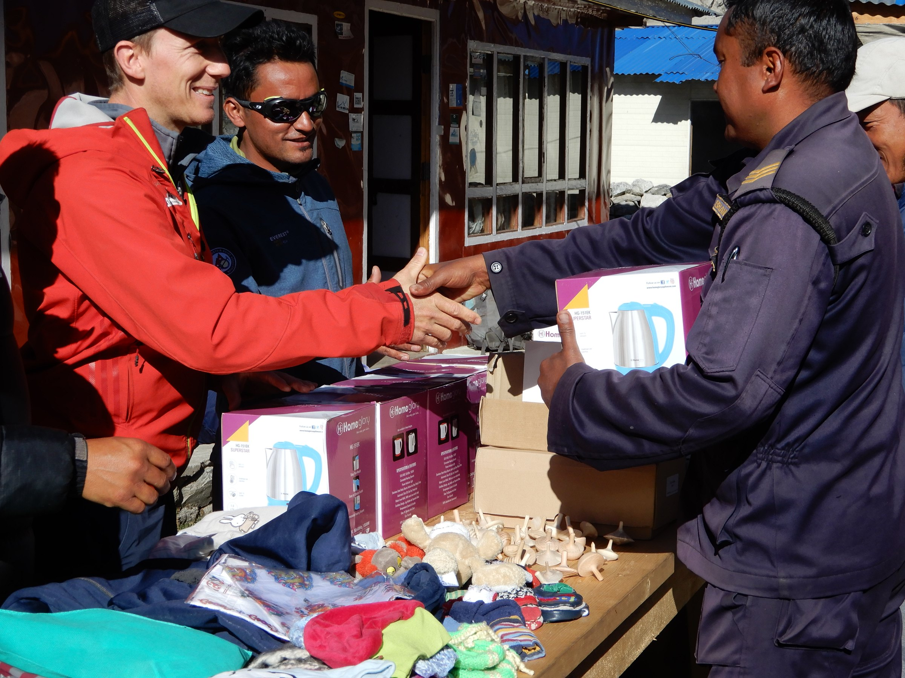
GRENZEN
VERSCHIEBEN.
Keine Reise von der Stange. Sondern Wege, die man nicht vergisst.
6000–8000 M
HOHE BERGE. GROSSE ZIELE.
NEPAL
TREKKING · KULTUR · BERGE
PAKISTAN
TREKKING · EXPEDITIONEN · KULTUR
KIRGISTAN
WEITE · BERGE · NOMADENKULTUR
SKITOUREN
KAMTSCHATKA UND MEHR
KEINE ABKÜRZUNG.
30+ JAHRE.
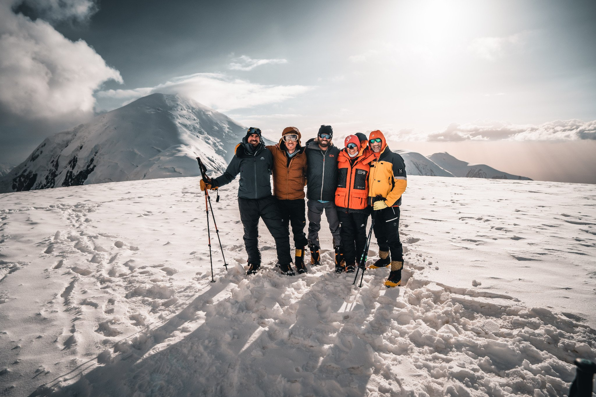
ALPEN · 42 VIERTAUSENDER
Seit 1994 unzählige Gipfel und Hochtouren in den Alpen – darunter 42 Besteigungen von Viertausendern.
ELBRUS · 5642 M
Im Frühling am Elbrus im Kaukasus.
SINGU CHULI · 6501 M
Expedition in Nepal mit Ngima Grimen Sherpa (†). Gründung des karitativen Vereins HÖHENBERGSTEIGEN.
NORWEGEN
Unterwegs in Norwegen.
YAUPA · 6422 M
Erstbesteigungsversuch am Yaupa in Nepal.
NANGAMARI I · 6547 M
Offizielle Erstbesteigung durch Remo D., David B. und Hira Gurung – geplant und organisiert von HÖHENBERGSTEIGEN.
ELBRUS 5642 M · NORDROUTE
Besteigung über die Nordroute des Elbrus.
ELBRUS · 5642 M
Erneut am höchsten Berg des Kaukasus.
YAUPA · 6422 M
Erneuter Erstbesteigungsversuch. Rückweg über East Col und West Col am Baruntse.
KAMTSCHATKA · LANGTANG
Skitouren auf Vulkanen im Frühling; Langtang-Trekking im Herbst.
CHULU WEST · 6419 M
Expedition am Chulu West in Nepal.
GOKYO LAKES · EVEREST BASE CAMP
Trekking in Nepal zu den Gokyo-Seen und zum Everest Base Camp.
CHITWAN · LANGTANG
Chitwan-Nationalpark und Langtang-Trekking in Nepal.
GASHERBRUM I · 8080 M
Expedition in Pakistan.
EVEREST 8848 M · LHOTSE 8516 M
Express Ascent – Everest und Lhotse in 30 Tagen.
ISLAND
Unterwegs in Island.
PIK LENIN · 7134 M
Expedition im Pamir, Kirgistan.
ANNAPURNA-UMRUNDUNG
Trekking rund um das Annapurna-Massiv in Nepal.
Keine Inszenierung. Unsere Bilder erzählen von den Bergen und den Menschen.
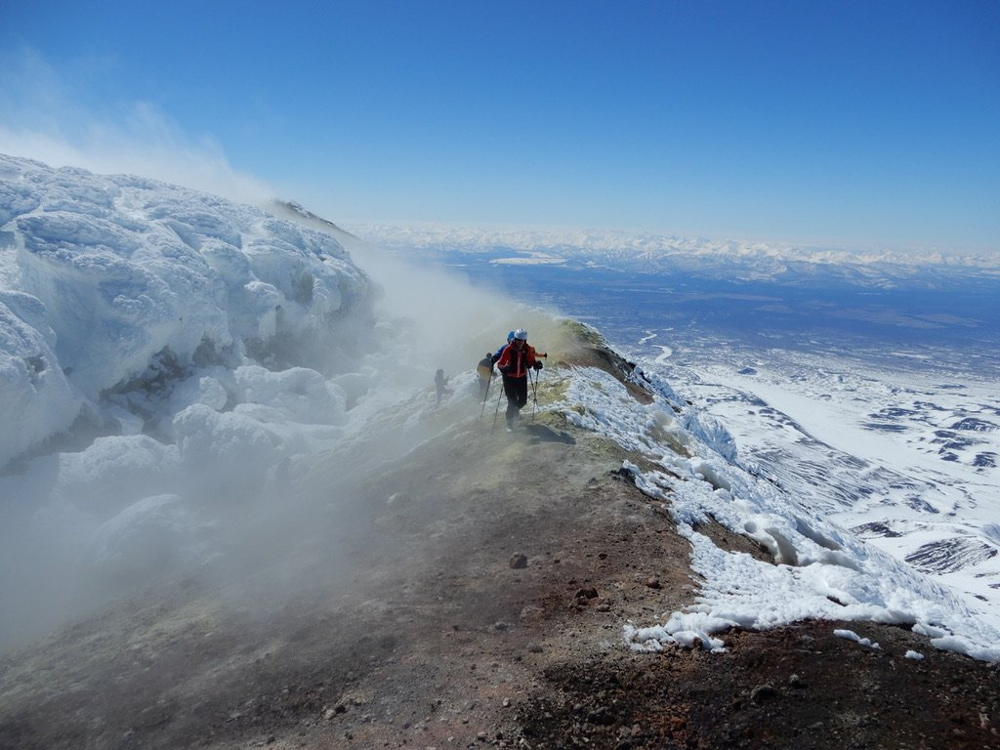
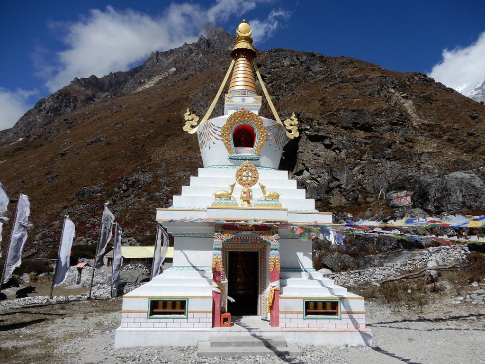
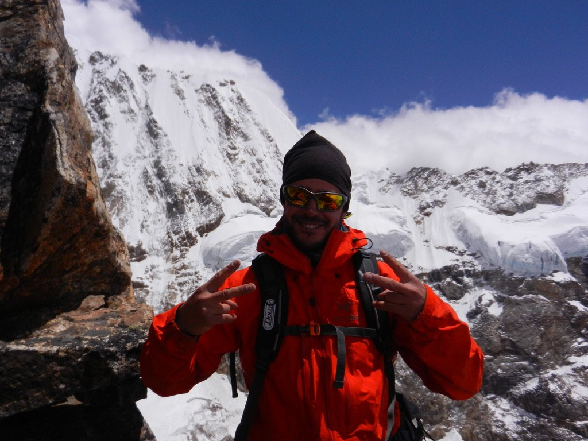
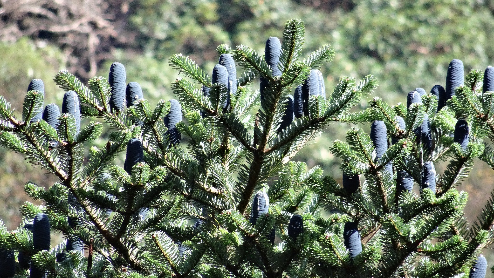
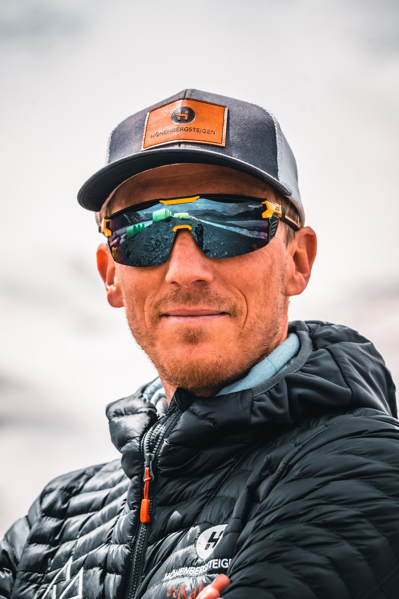
WAS BLEIBT,
WENN WIR
GEHEN?
Unsere Expeditionen und Reisen schaffen Möglichkeiten, die weit über das Bergerlebnis hinausgehen. Wer mit HÖHENBERGSTEIGEN reist, trägt gleichzeitig zu unserem karitativen Engagement bei. Denn die Erträge aus unseren Aktivitäten investieren wir in gemeinnützige Projekte – insbesondere in Bildung, Schulen, Familien und lokale Initiativen in den bereisten Regionen.
Ein herzliches Dankeschön an all unsere Gäste, die dieses Engagement mit ihrer Reise ermöglichen. Ebenso danken wir unseren Partnerfamilien, Freunden und unserem Staff vor Ort, die uns begleiten, unterstützen und unsere Projekte mit Leben füllen.
Gemeinsam bewegen wir mehr als nur uns selbst.
PROJEKT ODER UNTERSTÜTZUNG ANFRAGEN →DEIN ZIEL.
UNSER NÄCHSTES KAPITEL.
Ob Trekking, Skitour, 14 × 8000 m, Seven Summits, Express Ascents, kurze Expedition oder individuelles Bergprojekt: Wir freuen uns auf deine Anfrage. Wir sind weltweit unterwegs – mit einem besonderen Schwerpunkt auf Nepal und Pakistan. Als karitativer Verein verbinden wir Bergabenteuer mit Engagement vor Ort.
In rund 10–30 Tagen auf einen Achttausender: Durch gezielte Höhenakklimatisation bereits zu Hause kann sich die Zeit am Berg verkürzen. Ob das für dich infrage kommt, hängt von Gipfel, Erfahrung, Gesundheitszustand, Bedingungen und individueller Vorbereitung ab. Sicherheit und seriöse Planung haben Vorrang.
EXPRESS ASCENT ANFRAGEN →WOHIN GEHT
DEINE REISE?
Du hast einen Berg im Kopf, eine Region im Herzen oder eine Idee, die noch keinen Namen hat?
SCHREIB UNS →